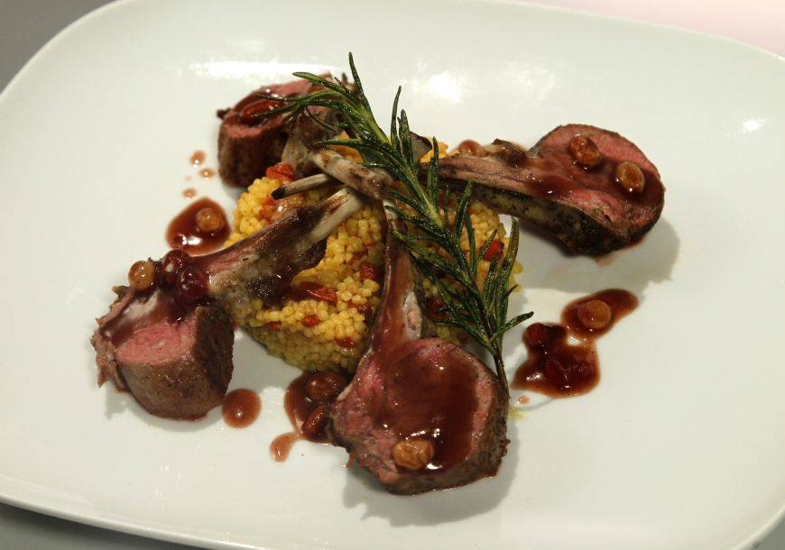
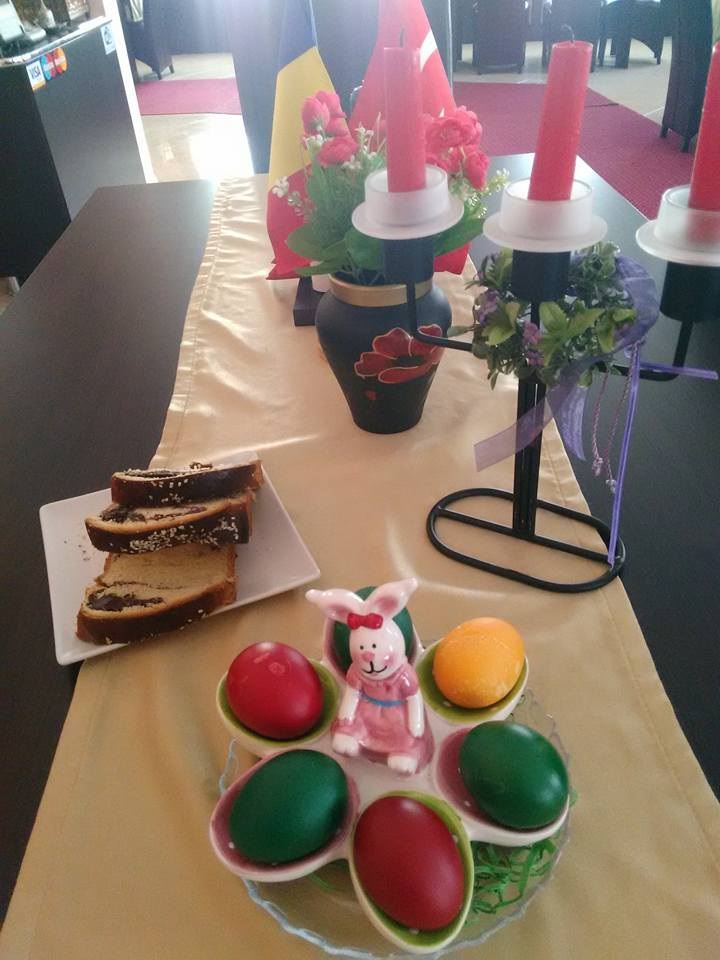
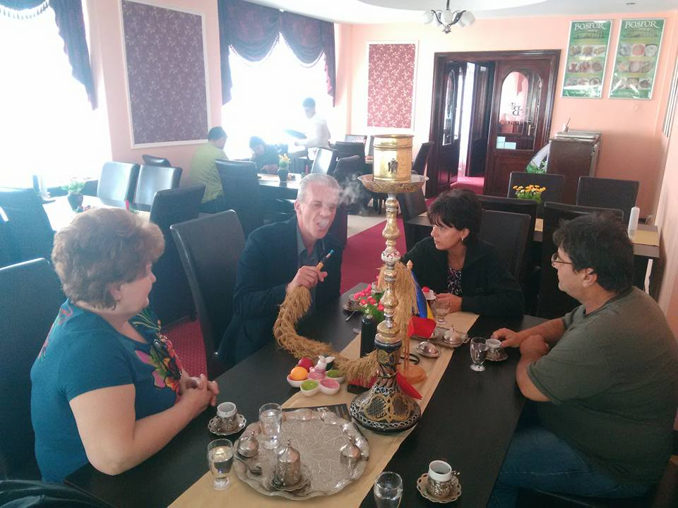
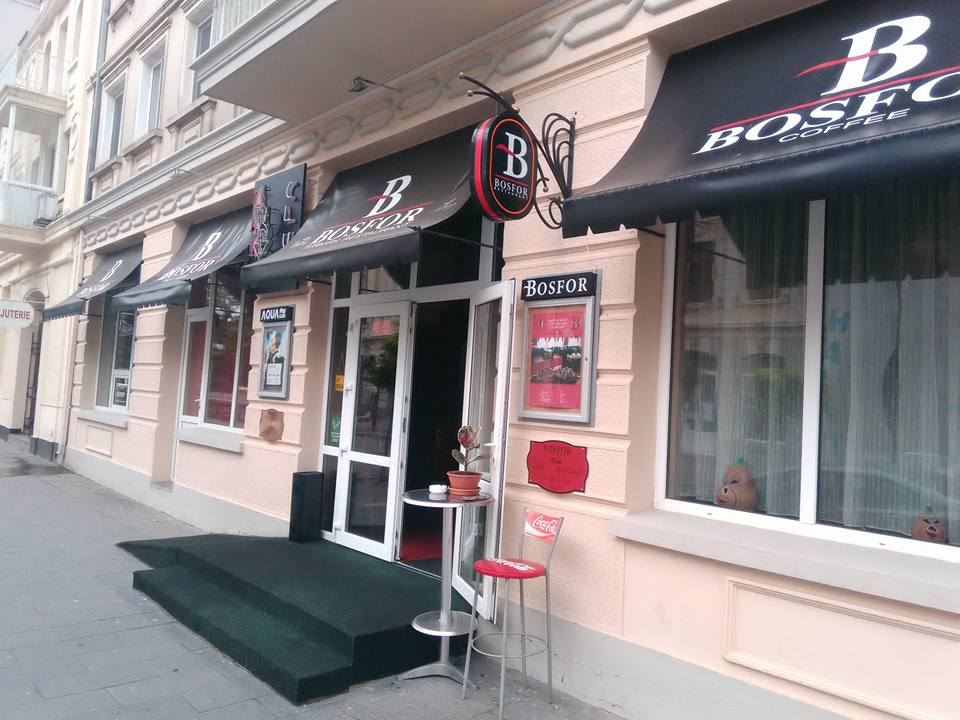
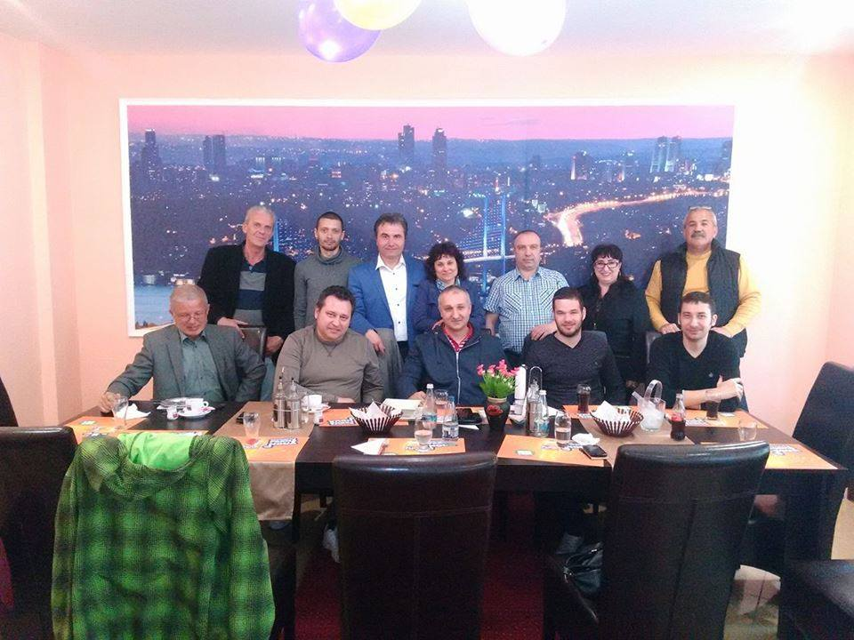
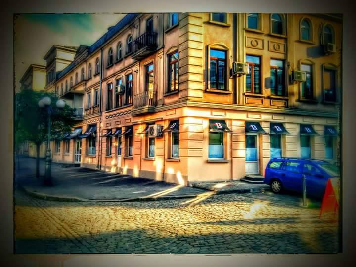

Cotlete de miel la grătar La grătar
Cotlete de miel rumenite pe grătar, așezate pe couscous parfumat și stropite cu un sos bogat — o farfurie de sărbătoare din bucătăria noastră.

Bucătărie turcească autentică, preparate la grătar și cafea turcească adevărată — servite sub muralul Bosforului, într-un local cald din inima Brăilei.
La BOSFOR ne-am propus un lucru simplu: să aducem gustul și căldura Turciei în centrul vechi al Brăilei. Un restaurant turcesc și cafenea, unde preparatele la grătar și cafeaua la ibric se servesc pe îndelete, așa cum se cuvine.
Localul poartă spiritul orașului de pe Bosfor — de la muralul cu podul de peste strâmtoare, care veghează sala, până la serviciul de cafea și ceai turcesc adus la masă în vase de alamă. Un colț de Istanbul, la câțiva pași de Dunăre.
Fie că treci pentru o cafea de după-amiază, o masă în familie sau o sărbătoare cu prietenii, ușa noastră de pe Strada Mihai Eminescu e mereu deschisă cu drag.

Trei motive pentru care brăilenii ne trec pragul din nou și din nou.
Preparate din bucătăria turcească, gătite cu răbdare și mirodenii adevărate — de la grătar la deserturi și cafea.
Fripturi și preparate la grătar pregătite la comandă — inima unui steakhouse turcesc, cu porții pe măsura poftei.
Cafea și ceai turcesc servite la ibric, sub muralul Bosforului — locul potrivit pentru o pauză sau o seară lungă.
Câteva imagini din restaurant — preparatele, atmosfera și localul din centrul vechi.

Localul nostru
Mese de sărbătoare
În centrul vechiSună înainte de vizită pentru programul zilei și rezervări — răspundem cu drag la 0239 625 155.